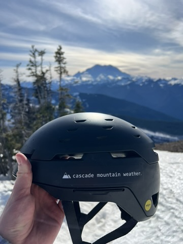
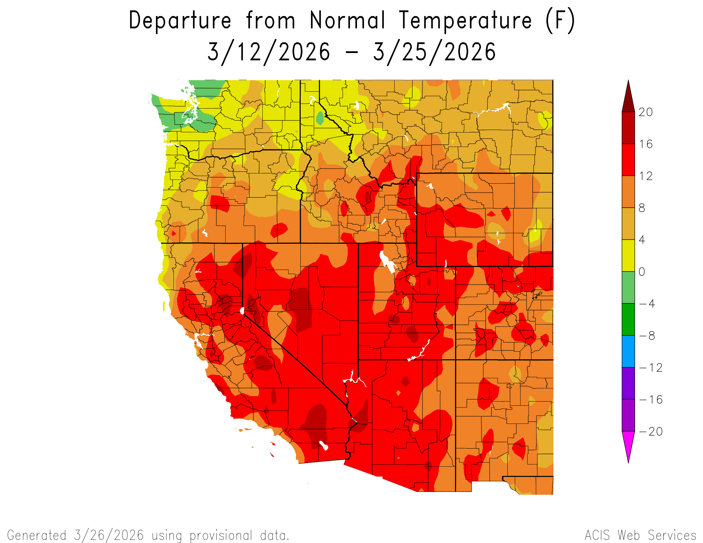
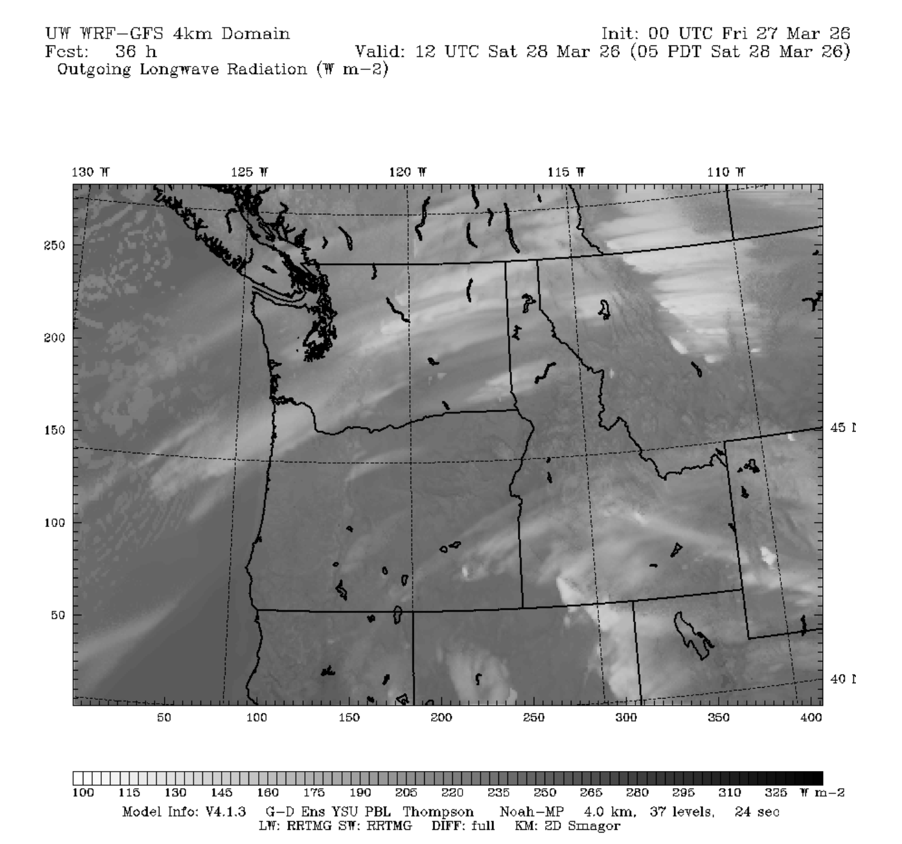
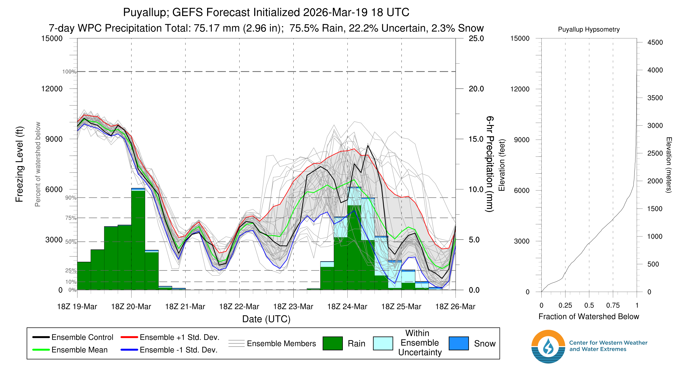
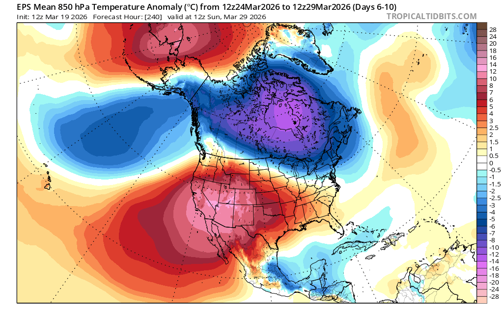

🌨️ The Rest of the West is Melting but Winter ain't Over Yet in the PNW
Welcome to The Dendritic Growth Zone!
Past Week's Recap
The past week has been a evenly distributed mixed bag of spring weather. As our multi-day AR event
came to a close over the weekend, cold air and blue skies took over leading to a picture perfect
weather weekend in the mountains and a delicious corn harvest for those who made it out.
 
High clouds began filtering into the region ahead of an approaching atmospheric river with it's evil surge of
warm air and subtropical moisture. Several inches of rain were recorded across our mountains (to add to the
5-8+ inches we saw last week) leading to some flooding in Snohomish and Skagit Counties. It's important to
note here once again that flooding from rain-on-snow events are not generally caused by rain melting snow. Instead,
warm, moist air condenses water vapor on the snow (like dew) which pumps immense amounts of energy into the snowpack.
The rain itself is important for flooding concerns but not snow melt. Danny had a great discussion of this
on last weeks forecast discussion, definitely worth a read if you haven't already.
This storm did however finish off with a Puget Sound Convergence Zone band of enhanced precipitation
Wednesday evening. Stevens Pass was squarely in the bullseye for this PSCZ and picked up 12-16" of
low density snow. Thursday would have been a phenomenally beautiful day out for those who made it up
there.
I know we are Cascade Mountain Weather, but I would be remiss if I didn't mention the absurdity
happening to our southeast. The past 2 weeks have brought unprecedented heat to much of the country and the
Southwest in particular. The former March all-time temperature record for the United States of 108F was
obliterated by numerous sites across California and Arizona, peaking at 112F at Winterhaven, AZ. This
has lead to many sites across the region reaching peak Snow Water Equivalent (SWE) weeks ahead of schedule.
For the Upper Colorado River Basin, this record-breaking heat wave was the death blow to a snowpack
already on the brink after a warm, dry winter. Please think of us snow scientists during these trying times 🥲
🧙♂️ Forecast Discussion
Short-term (Friday-Sunday)
Well! That was a lot of doom and gloom for the broader west. However, even though Denver or
Salt Lake's temperatures
may temperatures might lead you to believe otherwise, it's not May. It's still March which
gives us decent chances
to continue to pick up snow over the coming weeks. The upcoming week is no different.
We'll start the weekend high and dry as a transient ridge of high pressure quickly takes over
Friday into Saturday. High clouds ahead of the next storm will make their way into the Cascades
starting Saturday Morning. There's still a fair chance we see enough sun filtering through these
clouds to get a decent corn cycle in regions further south (ie Paradise/Crystal/White Pass). The plot
below shows outgoing longwave radiation from the 4km UW WRF weather model for Saturday Morning. Think
of this as somewhat similar to a satellite image, with the lighter colors associated with colder
cloud or surface temperatures and dark colors with warmer temperatures.


Medium-Term (Monday-Wednesday)
The medium term looks more tantalizing, with a full latitude trough dropping across the Western US sometime Wed-Fri next week. Cold air is more of a lock. Precipitation amounts however are more uncertain. Time will tell how good it gets for us. If you're looking for a reason to be optimistic, the GEFS and EPS ensembles have similar solutions in the 6-8 day range which is usually a vote of confidence.
🧙🔮🧙♂️ Reading the crystal ball - 7+ day outlook
Both US and European ensembles are hinting at more persistent ridging off the West Coast in the 8-14 day range. If the ridge sets up there, we'll likely see dry weather though it will remain on the cooler side compared to having the ridge directly overhead. Obviously, we have a much stronger sun now but think of this being more similar to sunny and cool times in mid-late January this year than the early-February heatwave this year.

❄️ Snowfall
Weekend Snow Accumulation Forecast
| Site | Through 4am Saturday | Through 4am Sunday | Weekend Snow Accumulation (4pm Thursday through 4am Monday 30 Mar) |
|---|---|---|---|
| Mt. Baker (4500') | 0" | 0" | 2-6" |
| Washington Pass | 0" | 0" | 0-3" |
| Stevens Pass (4500') | 0" | 0" | 0-3" |
| Hurricane Ridge | 0" | 0" | 0-3" |
| Blewett Pass | 0" | 0" | 0-1" |
| Snoqualmie Pass | 0" | 0" | 0-3" |
| Crystal (5000') | 0" | 0" | 0-3" |
| Paradise | 0" | 0" | 1-4" |
| White Pass (5000') | 0" | 0" | 0-2" |
🧊 Freezing Level
- Friday: 6000-8000 feet (strong north-south gradient)
- Saturday: 5000-7000 feet (drop in afternoon)
- Sunday: 3000-4000 feet
🎿 Our Recommendations
Best Choice This Weekend: Harvesting Corn at Paradise/Crystal and south
I think the late-March sun will win the battle against the high clouds Saturday and produce some half-decent corn in places that received less snow this week.
Runner-Up: High north facing near Stevens Pass
I'm not as confident in this one since the new snow will have seen warm sunny days on both Thursday and Friday before the weekend. That being said, if you find a particularly well protected north facing aspect at mid or upper elevations in this zone, you might score.
Before we go, a quick detour to ask does rain actually melt our snowpack?
This week's AR dumped an egregious amount of rain on the snowpack we built last weekend — and yes, snow definitely melted. But is the rain directly to blame? Not really. The physics are counterintuitive enough to be worth a quick detour.
Rain heat input vs. condensation latent heat
During a rain on snow event, the snowpack is a cold surface sitting in warm, saturated air. Ignoring net radiation (which is a rather big assumption here, but stick with me), there are two other ways energy reaches it: the heat carried by the rain itself, and the latent heat released when water vapor condenses directly onto the snow surface. The second one wins by a mile.
Using rough estimates for a site at ~1,500 m elevation with 5°C air, 100% humidity, 1 mm/hr of rain, and 3 m/s winds:
Rain heat input (Qr). One millimeter of rain per hour is 1 kg of water at 5°C landing on 0°C snow. Cooling through a 5 K temperature difference doesn't yield much:
Condensation latent heat (QE). Warm saturated air at 5°C has a vapor pressure of ~872 Pa; the 0°C snow surface sits at ~611 Pa. That gradient, stirred by wind, drives vapor to condense directly onto the snow. When it does, every kilogram of condensed vapor releases 2,500,000 J — the latent heat of vaporization. That's ~600× the energy per kilogram compared to simply cooling liquid water by one degree:
QE = 1.05 × 2,500,000 × 0.002 × 3 m/s × 0.0019 = ~30 W/m² → 0.33 mm w.e./hr melt
The bottom line: melt during rain-on-snow events is driven by warm, humid, windy air — not precipitation volume. The rain is just along for the ride.
Estimates use a bulk aerodynamic approach (Ce = 0.002, neutral stability), standard atmosphere at 1,500 m (P = 84,100 Pa), and Magnus formula saturation vapor pressures. Rough numbers — intended as illustration, not a precise forecast.